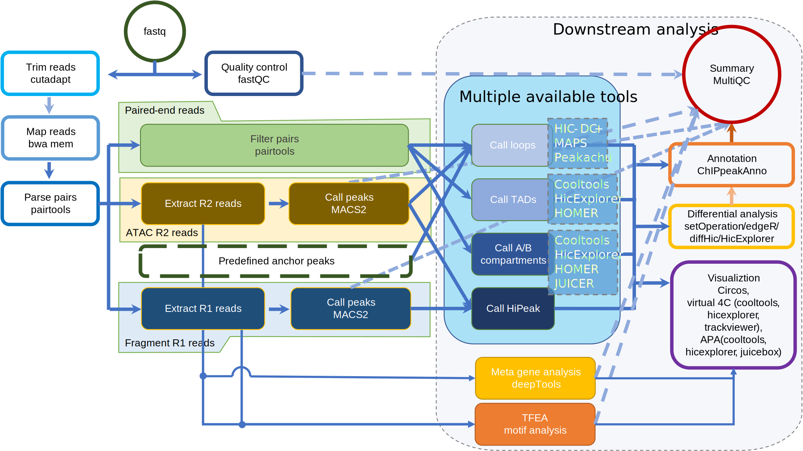

Introduction
jianhong/hicar is a bioinformatics best-practice analysis pipeline for HiC on Accessible Regulatory DNA (HiCAR) data, a robust and sensitive assay for simultaneous measurement of chromatin accessibility and cis-regulatory chromatin contacts. Unlike the immunoprecipitation-based methods such as HiChIP, PlAC-seq and ChIA-PET, HiCAR does not require antibodies. HiCAR utilizes a Transposase-Accessible Chromatin assay to anchor the chromatin interactions. HiCAR is a tool to study chromatin interactions for low input samples and samples with no available antibodies.
The pipeline can also handle the experiment of HiChIP, ChIA-PET, and PLAC-Seq. It will ask user to input the peak file for the anchor peaks.
The pipeline is built using Nextflow, a workflow tool to run tasks across multiple compute infrastructures in a very portable manner. It uses Docker/Singularity containers making installation trivial and results highly reproducible. The Nextflow DSL2 implementation of this pipeline uses one container per process which makes it much easier to maintain and update software dependencies. Where possible, these processes have been submitted to and installed from nf-core/modules in order to make them available to all nf-core pipelines, and to everyone within the Nextflow community!
On release, automated continuous integration tests run the pipeline on a full-sized dataset on the AWS cloud infrastructure. This ensures that the pipeline runs on AWS, has sensible resource allocation defaults set to run on real-world datasets, and permits the persistent storage of results to benchmark between pipeline releases and other analysis sources.The results obtained from the full-sized test can be viewed on the nf-core website.
Pipeline summary
- Read QC (
FastQC) - Trim reads (
cutadapt) - Map reads (
bwa mem) - Filter reads (
pairtools) - Quality analysis (
pairsqc) - Create cooler files (
cooler) - Call peaks for ATAC reads (R2 reads) (
MACS2). - Call A/B compartments (
cooltools,homer, etc.) - Call TADs (
HiCExplorer,homer, etc.) - Find genomic interaction loops (
MAPS,HiCDCPlus, Peakachu, etc.) - Aggregate peak analysis (
HiCExplorer,Juicer_tools, etc.) - Call HiPeak (high resolution analysis, time consuming, motif analysis)
- Differential analysis (
diffHic, etc.) - Annotate genomic interaction loops (
ChIPpeakAnno) - Visualization (.mcools files
cooler, .hic filesJuicer_tools, and circos filescircos) - Pipeline reporting (
MultiQC)

Usage
Note If you are new to Nextflow and nf-core, please refer to this page on how to set-up Nextflow. Make sure to test your setup with
-profile testbefore running the workflow on actual data.
First, prepare a samplesheet with your input data that looks as follows:
samplesheet.csv:
group,replicate,fastq_1,fastq_2
CONTROL,1,AEG588A1_S1_L002_R1_001.fastq.gz,AEG588A1_S1_L002_R2_001.fastq.gzEach row represents a fastq file (single-end) or a pair of fastq files (paired end).
Now, you can run the pipeline using:
nextflow run nf-core/hicar \
-profile <docker/singularity/podman/shifter/charliecloud/conda/institute> \
--input samplesheet.csv \ # Input data
--qval_thresh 0.01 \ # Cut-off q-value for MACS2
--genome GRCh38 \ # Genome Reference
--mappability /path/mappability/bigWig/file # Provide mappability to avoid memory intensive calculationWarning: Please provide pipeline parameters via the CLI or Nextflow
-params-fileoption. Custom config files including those provided by the-cNextflow option can be used to provide any configuration except for parameters; see docs.
For more details, please refer to the usage documentation and the parameter documentation.
Pipeline output
To see the the results of a test run with a full size dataset refer to the results tab on the nf-core website pipeline page. For more details about the output files and reports, please refer to the output documentation.
Credits
nf-core/hicar was originally written by Jianhong Ou, Yu Xiang, and Yarui Diao.
We thank the following people for their extensive assistance in the development of this pipeline: Luke Zappia, James A. Fellows Yates, Phil Ewels, Mahesh Binzer-Panchal and Friederike Hanssen.
Contributions and Support
If you would like to contribute to this pipeline, please see the contributing guidelines.
For further information or help, don't hesitate to get in touch on the Slack #hicar channel (you can join with this invite).
Citations
If you use nf-core/hicar for your analysis, please cite it using the following doi: 10.5281/zenodo.6515312
An extensive list of references for the tools used by the pipeline can be found in the CITATIONS.md file.
You can cite the nf-core publication as follows:
The nf-core framework for community-curated bioinformatics pipelines.
Philip Ewels, Alexander Peltzer, Sven Fillinger, Harshil Patel, Johannes Alneberg, Andreas Wilm, Maxime Ulysse Garcia, Paolo Di Tommaso & Sven Nahnsen.
Nat Biotechnol. 2020 Feb 13. doi: 10.1038/s41587-020-0439-x.